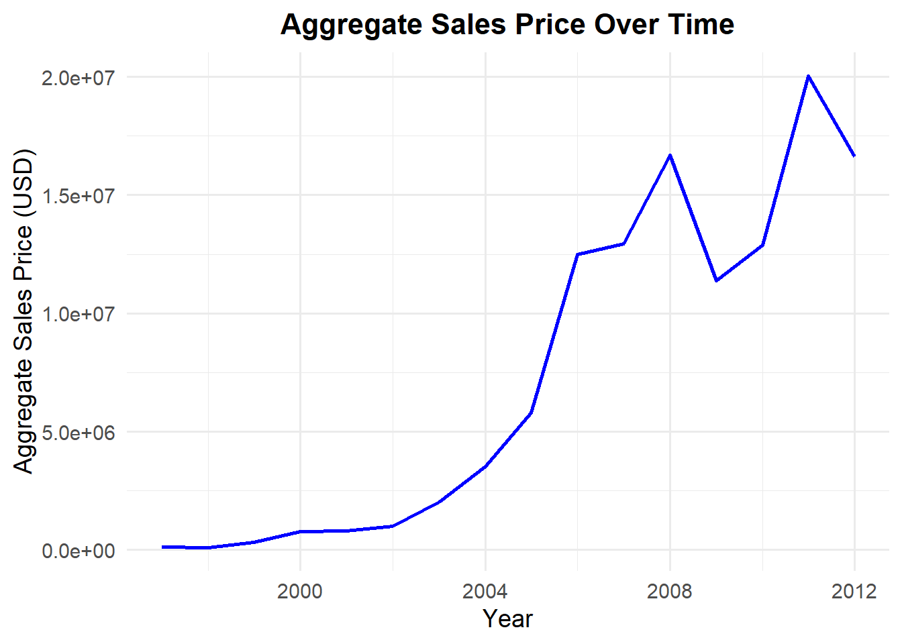
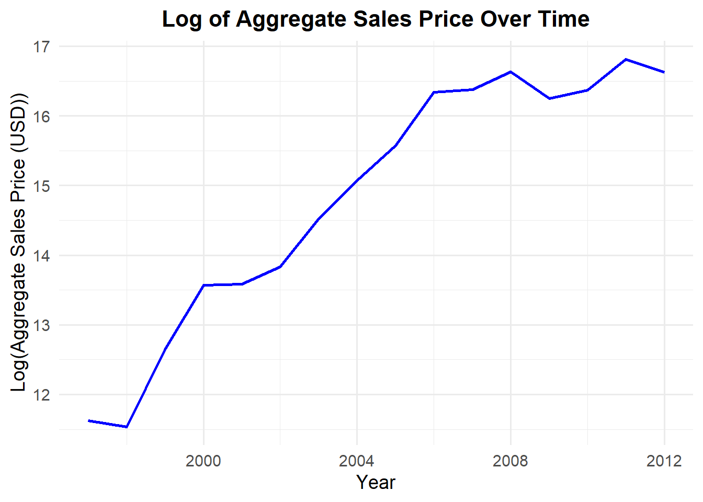
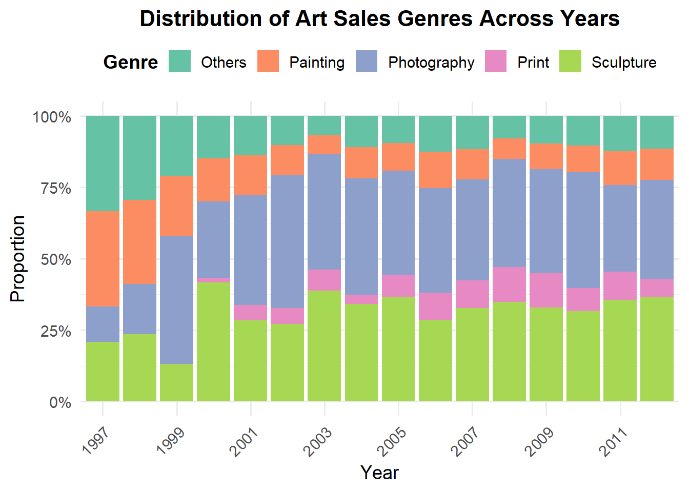
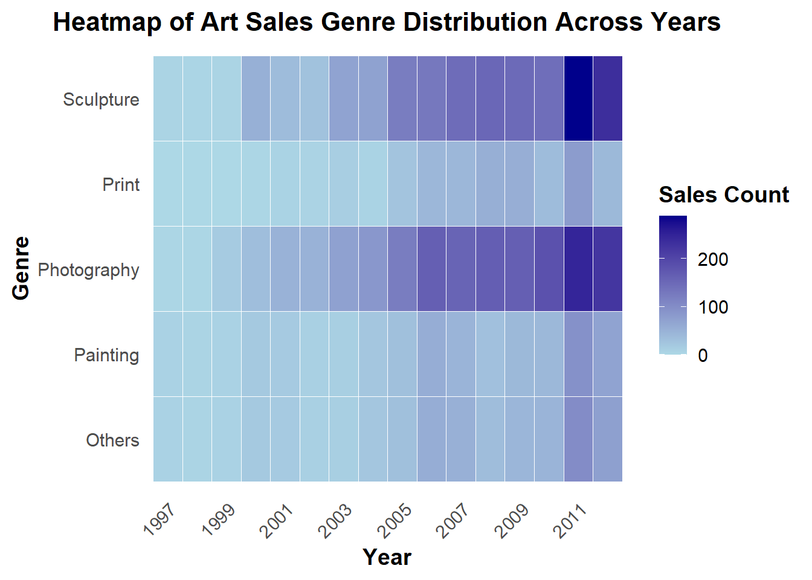
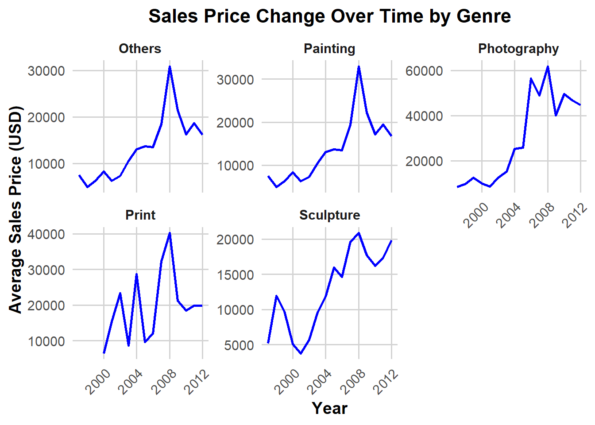
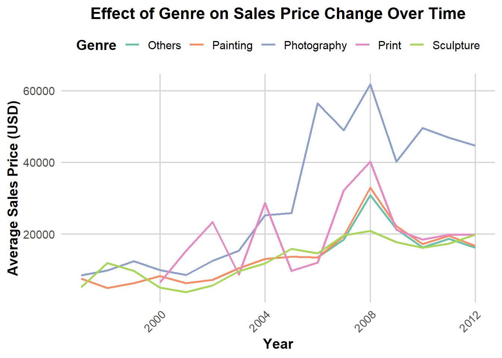

library(tidyverse)
library(dplyr)
library(ggplot2)
library(tidyverse)
library(nycflights13)STATS506_ProblemSet4
git_address:“https://github.com/JiaweiQin-UM/STATS506.git”
Load Packages
Problem 1
a. Airport Delay
flights %>%
group_by(origin) %>%
summarise(mean_delay = mean(dep_delay, na.rm=TRUE),
median_delay = median(dep_delay, na.rm=TRUE),
cnt = n()) %>%
filter(cnt >= 10) %>%
ungroup %>%
left_join(airports, by = c("origin" = "faa")) %>%
select(name, mean_delay, median_delay) %>%
arrange(desc(mean_delay))# A tibble: 3 × 3
name mean_delay median_delay
<chr> <dbl> <dbl>
1 Newark Liberty Intl 15.1 -1
2 John F Kennedy Intl 12.1 -1
3 La Guardia 10.3 -3flights %>%
group_by(dest) %>%
summarise(mean_delay = mean(dep_delay, na.rm=TRUE),
median_delay = median(dep_delay, na.rm=TRUE),
cnt = n()) %>%
filter(cnt >= 10) %>%
ungroup %>%
left_join(airports, by = c("dest" = "faa")) %>%
mutate(name = ifelse(is.na(name), dest, name)) %>%
select(name, mean_delay, median_delay) %>%
arrange(desc(mean_delay)) %>%
print(n=count(.))# A tibble: 102 × 3
name mean_delay median_delay
<chr> <dbl> <dbl>
1 "Columbia Metropolitan" 35.6 14
2 "Tulsa Intl" 34.9 8
3 "Will Rogers World" 30.6 10
4 "Birmingham Intl" 29.7 1
5 "Mc Ghee Tyson" 28.5 0
6 "Jackson Hole Airport" 26.5 13.5
7 "Des Moines Intl" 26.2 -1
8 "Richmond Intl" 23.6 -1
9 "Albany Intl" 23.6 1
10 "Dane Co Rgnl Truax Fld" 23.6 -1
11 "Cherry Capital Airport" 22.1 -3
12 "Theodore Francis Green State" 21.8 0
13 "Charlottesville-Albemarle" 21.4 -2.5
14 "South Bend Rgnl" 21.1 14
15 "Manchester Regional Airport" 21.0 0
16 "Akron Canton Regional Airport" 20.8 0
17 "San Antonio Intl" 20.7 1
18 "Kansas City Intl" 20.3 -1
19 "Eppley Afld" 20.2 -1
20 "Gerald R Ford Intl" 19.5 -1
21 "Cincinnati Northern Kentucky Intl" 19.5 -2
22 "Bangor Intl" 19.5 -2
23 "Wilmington Intl" 19.4 -3
24 "Piedmont Triad" 19.4 -1
25 "Greenville-Spartanburg International" 19.3 -1
26 "General Mitchell Intl" 18.8 0
27 "Sacramento Intl" 18.7 2
28 "Chicago Midway Intl" 18.6 2
29 "Savannah Hilton Head Intl" 18.3 -1
30 "Bradley Intl" 17.7 -1
31 "Montrose Regional Airport" 17.6 3
32 "Norfolk Intl" 17.6 -2
33 "James M Cox Dayton Intl" 17.5 -2
34 "Yeager" 17 -4
35 "Washington Dulles Intl" 17.0 -2
36 "Jacksonville Intl" 16.5 -1
37 "Portland Intl Jetport" 16.5 -2
38 "Louisville International Airport" 16.4 -2
39 "Baltimore Washington Intl" 16.4 -2
40 "Portland Intl" 16.3 1
41 "Greater Rochester Intl" 16.2 -2
42 "Lambert St Louis Intl" 16.0 -1
43 "Nashville Intl" 16.0 -1
44 "Myrtle Beach Intl" 15.8 -1
45 "Memphis Intl" 15.7 -1
46 "Eagle Co Rgnl" 15.5 -1
47 "Denver Intl" 15.2 1
48 "Charleston Afb Intl" 14.7 -2
49 "Syracuse Hancock Intl" 14.4 -2
50 "William P Hobby" 14.3 0
51 "Louis Armstrong New Orleans Intl" 14.2 -2
52 "Indianapolis Intl" 14.0 -2
53 "Albuquerque International Sunport" 13.7 0
54 "Pittsburgh Intl" 13.7 -2
55 "Burlington Intl" 13.6 -2
56 "Chicago Ohare Intl" 13.6 -2
57 "Bob Hope" 13.5 -1
58 "Buffalo Niagara Intl" 13.4 -2
59 "Cleveland Hopkins Intl" 13.4 -2
60 "Metropolitan Oakland Intl" 13.3 0
61 "Minneapolis St Paul Intl" 13.3 -2
62 "Austin Bergstrom Intl" 13.0 -1
63 "Palm Beach Intl" 13.0 0
64 "San Francisco Intl" 12.9 0
65 "Fort Lauderdale Hollywood Intl" 12.7 -1
66 "Hartsfield Jackson Atlanta Intl" 12.5 -2
67 "Raleigh Durham Intl" 12.4 -2
68 "BQN" 12.4 -1
69 "Yampa Valley" 12.3 6.5
70 "Port Columbus Intl" 12.2 -3
71 "Tampa Intl" 12.1 -1
72 "Philadelphia Intl" 12.0 -3
73 "Detroit Metro Wayne Co" 11.8 -3
74 "Gallatin Field" 11.5 0
75 "Orlando Intl" 11.3 -1
76 "Long Beach" 11.2 -1
77 "San Diego Intl" 11.1 0
78 "George Bush Intercontinental" 10.8 0
79 "Seattle Tacoma Intl" 10.7 -1
80 "Phoenix Sky Harbor Intl" 10.4 -1
81 "Ronald Reagan Washington Natl" 10.3 -3
82 "PSE" 10.1 -1
83 "Norman Y Mineta San Jose Intl" 10.1 -1
84 "SJU" 9.81 -1
85 "Mc Carran Intl" 9.42 -1
86 "Los Angeles Intl" 9.40 -1
87 "Honolulu Intl" 9.29 -1
88 "Charlotte Douglas Intl" 9.22 -3
89 "Salt Lake City Intl" 9.03 -1
90 "Miami Intl" 8.88 -2
91 "General Edward Lawrence Logan Intl" 8.73 -3
92 "Dallas Fort Worth Intl" 8.68 -3
93 "Southwest Florida Intl" 8.28 -2
94 "Asheville Regional Airport" 8.19 -3
95 "John Wayne Arpt Orange Co" 7.76 -1
96 "Sarasota Bradenton Intl" 7.26 -3
97 "Martha\\\\'s Vineyard" 7.05 -2
98 "NW Arkansas Regional" 6.46 -5
99 "Nantucket Mem" 6.46 -3
100 "STT" 4.61 -2
101 "Key West Intl" 3.65 0
102 "Palm Springs Intl" -2.94 -4 ###b. Fastest Average Speed
flights %>%
left_join(planes, by = "tailnum") %>%
mutate(fly_hours = air_time/60,
mph = distance/fly_hours) %>%
group_by(model) %>%
summarize(fast_avgspeed = mean(mph, na.rm = TRUE),
cnt = n()) %>%
arrange(desc(fast_avgspeed)) %>%
slice(1)# A tibble: 1 × 3
model fast_avgspeed cnt
<chr> <dbl> <int>
1 777-222 483. 4Problem 2
nnmaps <- read_csv("chicago-nmmaps.csv")Rows: 1461 Columns: 11
── Column specification ────────────────────────────────────────────────────────
Delimiter: ","
chr (3): city, season, month
dbl (7): temp, o3, dewpoint, pm10, yday, month_numeric, year
date (1): date
ℹ Use `spec()` to retrieve the full column specification for this data.
ℹ Specify the column types or set `show_col_types = FALSE` to quiet this message.##' Get average monthly temperature
##' @param month A numeric (1-12) or string representing the month.
##' @param yearA numeric value indicating the year. Must be between 1997 and 2000.
##' @param data Oringin data set containing columns `temp`, `month_numeric`, and `year`
##' @param average_fn Function to compute average. Default is `mean`.
##' @param celsius Logical; if TRUE, converts the temperature to Celsius. Default is FALSE.
##' @return Average temperature
get_temp <- function(month, year, data,
celsius = FALSE,
average_fn = mean){
# Process month format
if(month %>% is.numeric)
{
if (month < 1 | month > 12)
{stop("input month should be 1-12.")}
}
else if(month %>% is.character)
{
months <- c("January", "February", "March", "April", "May", "June", "July","August", "September", "October", "November", "December")
month %>%
match.arg(months) %>%
`==`(months) %>%
which -> month
}
else
{ stop('input month should be a string or a numeric 1-12.') }
# Process year format
if(!year %>% is.numeric)
{
stop( 'input year should be numeric.' )
}
if(year < 1997 | year > 2000)
{
stop('input year should by 1997-2000.')
}
# Check function availability
if (!(average_fn %>% is.function))
{
stop("average_fn must be a function")
}
year_select <- year
# Get temperature
data %>%
select(temp, month_numeric, year) %>%
filter(month_numeric == month,
year == year_select) %>%
summarise(target_temp = average_fn(temp)) %>%
mutate(target_temp = ifelse(isTRUE(celsius),
5/9*(target_temp - 32),
target_temp)) %>%
as.numeric -> result
# Output
return(result)
}get_temp("Apr", 1999, data = nnmaps)[1] 49.8get_temp("Apr", 1999, data = nnmaps, celsius = TRUE)[1] 9.888889get_temp(10, 1998, data = nnmaps, average_fn = median)[1] 55get_temp(13, 1998, data = nnmaps)Error in get_temp(13, 1998, data = nnmaps): input month should be 1-12.get_temp(2, 2005, data = nnmaps)Error in get_temp(2, 2005, data = nnmaps): input year should by 1997-2000.get_temp("November", 1999, data =nnmaps, celsius = TRUE,
average_fn = function(x) {
x %>% sort -> x
x[2:(length(x) - 1)] %>% mean %>% return
})[1] 7.301587Problem 3
df <- read_csv("df_for_ml_improved_new_market.csv")
df %>% head# A tibble: 6 × 112
id case_id year height width size_inchsqr price_usd meanprice_year
<dbl> <dbl> <dbl> <dbl> <dbl> <dbl> <dbl> <dbl>
1 0 57649 1997 29 24 696 4160 247.
2 1 30468 1997 17 14 238 2340 13.9
3 2 85464 1997 28 22 616 3640 26.5
4 3 27308 1997 32 39 1248 10832 18.2
5 4 82202 1997 46 37 1702 13210 5.26
6 5 60932 1997 50 43 2150 3434 30.4
# ℹ 104 more variables: min_price <dbl>, max_price <dbl>,
# medianprice_year <dbl>, cnt_mean <dbl>, cnt_max <dbl>, cnt_median <dbl>,
# cot_mean <dbl>, cot_max <dbl>, cot_median <dbl>, ranking <dbl>,
# fest_biennal <dbl>, private_inst <dbl>, public_inst <dbl>, solo_show <dbl>,
# group_show <dbl>, age <dbl>, estimate_min_usd <dbl>,
# estimate_max_usd <dbl>, estimate_center_usd <dbl>,
# log10_estimate_geo_mean_usd <dbl>, estimate_range_usd <dbl>, …a. Is there a change in the sales price in USD over time?
We can observe a steady increase of aggregate sale price across past several years, though decreases occurred after 2008 and 2011.
The figures for sales price are so large, so we conduct a log-transformation We can witness the same trend for the change in the sales price in USD over time.
# Aggregate Sales Price Over Time
ggplot(df, aes(x = year, y = price_usd)) +
geom_line(stat = "summary", fun = sum, color = "blue", size = 1) +
labs(title = "Aggregate Sales Price Over Time",
x = "Year",
y = "Aggregate Sales Price (USD)") +
theme_minimal(base_size = 14) +
theme(
plot.title = element_text(hjust = 0.5, face = "bold", size = 16))Warning: Using `size` aesthetic for lines was deprecated in ggplot2 3.4.0.
ℹ Please use `linewidth` instead.
# Log of Aggregate Sales Price Over Time
ggplot(df, aes(x = year, y = price_usd)) +
geom_line(stat = "summary", fun = function(x) log(sum(x)), color = "blue", size = 1) +
labs(title = "Log of Aggregate Sales Price Over Time",
x = "Year",
y = "Log(Aggregate Sales Price (USD))") +
theme_minimal(base_size = 14) +
theme(
plot.title = element_text(hjust = 0.5, face = "bold", size = 16))
b. Does the distribution of genre of sales across years appear to change?
We process the data to get a dataset for analyzing the distribution of genre of sales.
# Summarize the distribution of genre
df_genre_distribution <- df %>%
group_by(year) %>%
summarize(
Photography = sum(Genre___Photography),
Print = sum(Genre___Print),
Sculpture = sum(Genre___Sculpture),
Painting = sum(Genre___Painting),
Others = sum(Genre___Others)
) %>%
pivot_longer(cols = Photography:Others, names_to = "Genre", values_to = "Count")The proportion of Photography Arts sold increased over past years. The sculpture is also popular art genre. The proportion of paintings sold decreased, while print did not see too much fluctuation.
# The distribution of genre of sales (proportion)
ggplot(df_genre_distribution, aes(x = factor(year), y = Count, fill = Genre)) +
geom_bar(stat = "identity", position = "fill") +
labs(title = "Distribution of Art Sales Genres Across Years",
x = "Year",
y = "Proportion",
fill = "Genre") +
scale_y_continuous(labels = scales::percent_format()) +
scale_x_discrete(breaks = function(x) x[seq(1, length(x), by = 2)]) +
scale_fill_brewer(palette = "Set2") +
theme_minimal(base_size = 14) +
theme(
plot.title = element_text(hjust = 0.5, face = "bold", size = 16),
axis.text.x = element_text(angle = 45, hjust = 1),
legend.position = "top",
legend.title = element_text(face = "bold")
)
We also display the heatmap. The absolute amounts of sculptures and photography has increased greatly, while those of other three genres didn’t see such a significant change.
# Heatmap
ggplot(df_genre_distribution, aes(x = factor(year), y = Genre, fill = Count)) +
geom_tile(color = "white") +
scale_fill_gradient(low = "lightblue", high = "darkblue") +
labs(title = "Heatmap of Art Sales Genre Distribution Across Years",
x = "Year",
y = "Genre",
fill = "Sales Count") +
scale_x_discrete(breaks = function(x) x[seq(1, length(x), by = 2)]) +
theme_minimal(base_size = 14) +
theme(
plot.title = element_text(hjust = 0.5, face = "bold", size = 16),
axis.title = element_text(face = "bold"),
axis.text.x = element_text(angle = 45, hjust = 1),
panel.grid.major = element_blank(),
panel.grid.minor = element_blank(),
legend.position = "right",
legend.title = element_text(face = "bold")
)
c. How does the genre affect the change in sales price over time?
# pivot table
df_price_by_genre <- df %>%
pivot_longer(cols = starts_with("Genre___"), names_to = "Genre", values_to = "present") %>%
filter(present == 1) %>%
group_by(year, Genre) %>%
summarize(avg_price = mean(price_usd, na.rm = TRUE)) %>%
mutate(Genre = gsub("Genre___", "", Genre))Both price of painting, photography and others increased greatly. The price of Printing experienced dramatically fluctuation, while that of Sculpture decreased until 2001 and spike after 2001. Photography remains the most valuable art genre.
# facet plot
ggplot(df_price_by_genre, aes(x = year, y = avg_price)) +
geom_line(color = "blue", size = 1) +
facet_wrap(~ Genre, scales = "free_y") +
labs(title = "Sales Price Change Over Time by Genre",
x = "Year",
y = "Average Sales Price (USD)") +
theme_minimal(base_size = 14) +
theme(
plot.title = element_text(hjust = 0.5, face = "bold", size = 16),
axis.title = element_text(face = "bold"),
axis.text.x = element_text(angle = 45, hjust = 1),
strip.text = element_text(face = "bold"),
panel.grid.major = element_line(color = "lightgrey"),
panel.grid.minor = element_blank(),
legend.position = "top"
)
# Genre affect the change in sales price over time
ggplot(df_price_by_genre, aes(x = year, y = avg_price, color = Genre)) +
geom_line(size = 1) +
labs(title = "Effect of Genre on Sales Price Change Over Time",
x = "Year",
y = "Average Sales Price (USD)",
color = "Genre") +
theme_minimal(base_size = 14) +
scale_color_brewer(palette = "Set2") +
theme(
plot.title = element_text(hjust = 0.5, face = "bold", size = 16),
axis.title = element_text(face = "bold"),
axis.text.x = element_text(angle = 45, hjust = 1),
legend.position = "top",
legend.title = element_text(face = "bold"),
panel.grid.major = element_line(color = "lightgrey"),
panel.grid.minor = element_blank()
)